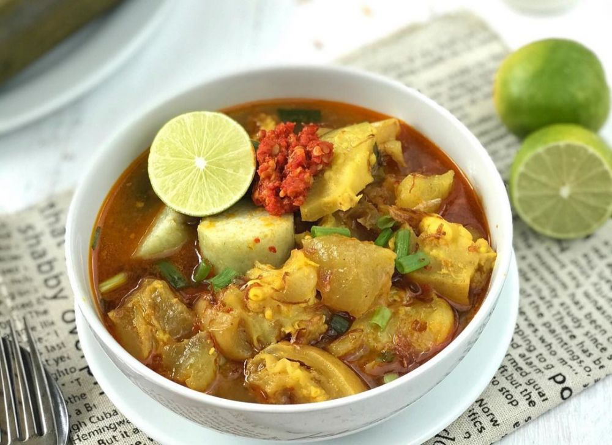

Cerita Singkat Surabaya

Kota Surabaya adalah ibu kota Provinsi Jawa Timur, Indonesia, sekaligus kota metropolitan terbesar di provinsi tersebut. Surabaya merupakan kota terbesar kedua di Indonesia setelah Jakarta. Kota ini terletak 800 km sebelah timur Jakarta, atau 435 km sebelah barat laut Denpasar, Bali.
Nama Surabaya, sesuai dengan etimologinya, berasal dari kata Sura ata Suro dan Baya atau Boyo, dalam bahasa Jawa. Suro adalah jenis ikan hiu, sedang boyo adalah istilah bahasa jawa untuk buaya. Menurut mitos, dua hewan ini adalah binatang paling kuat yang juga menjadi simbol kota Surabaya sampai saat ini.
Kuliner Khas Surabaya
Rujak Cingur
Rujak Cingur adalah salah satu makanan tradisional yang mudah ditemukan di daerah Jawa Timur. Dalam bahasa Jawa kata Cingur berarti Mulut
, hal ini merujuk pada bahan irisan mulut atau moncong sapi yang direbus dan dicampurkan ke dalam hidangan.
Tahu Tek

Tahu Tek adalah salah satu masakan khas Jawa Timur yang terdiri dari tahu goreng setengah matang dan lontong yang dipotong kecil-kecil dengan gunting dan garpu untuk memegang tahu atau lontong, telur, kentang goreng, sedikit taoge, dan irisan ketimun dipotong kecil. Tahu Tek dihidangkan dengan cara disiram dengan saus kacang dengan campuran petis di atasnya, ditaburkan kerupuk udang yang bentuknya kecil.
Rawon
Rawon adalah masakan khas Jawa Timmur berupa sup daging berkuah hitam dengan campuran bumbu khas yang menggunakan Kluwek.
Lontong Kikil

Lontong Kikil salah satu makanan khas Jawa Timur yang terdiri dari lontong dan kikil sapi dengan kuah segar dan gurih. Tidak ketinggalan sambal kemiri yang menambah selera makan.
Lontong Balap

Lontong Balap merupakan makanan khas Jawa Timur yang terdiri dari lontong berkuah dengan isian tauge, tahu, lentho, dan juga tak lupa sate kerang.
Tempat Wisata
Tugu Pahlawan

Tugu Pahlawan merupakan tiang tinggi yang menyerupai paku terbalik. Tugu ini dijadikan sebagai monumen untuk mengenang keberanian dan perjuangan para pahlawan yang melawan penjajah pada 10 November 1945. Panjang, ruas, dan lengkung tugu ini dibangun berdasarkan jumlah angka di tanggal 10 bulan 11 tahun 1945.